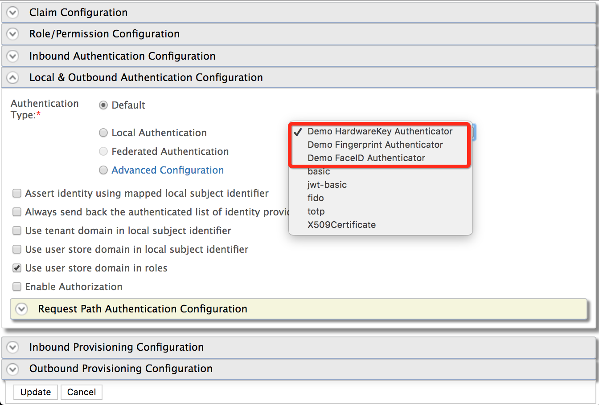
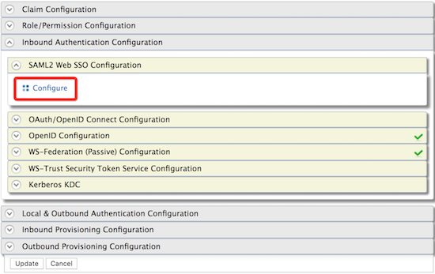
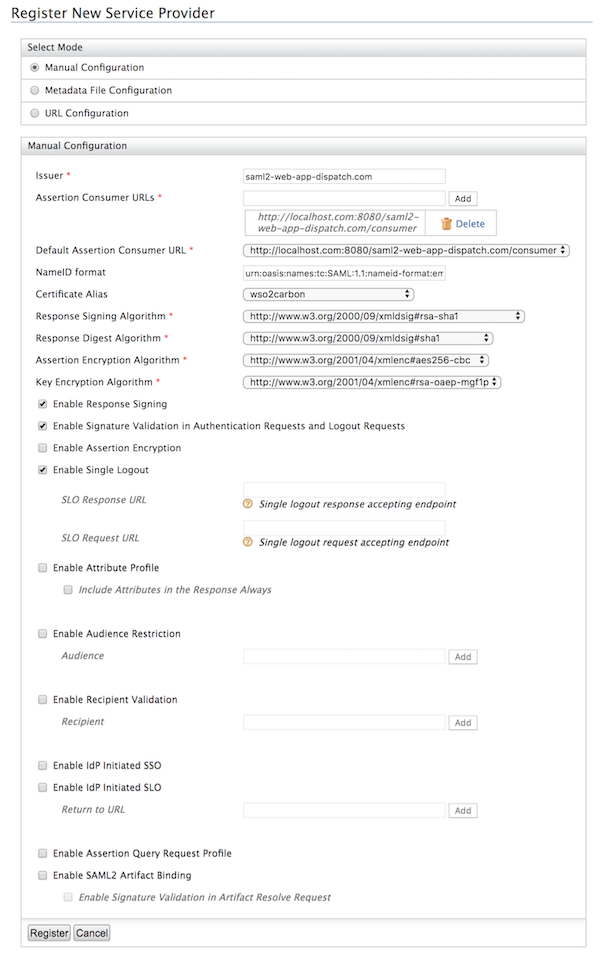
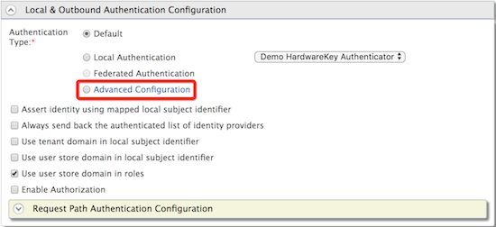
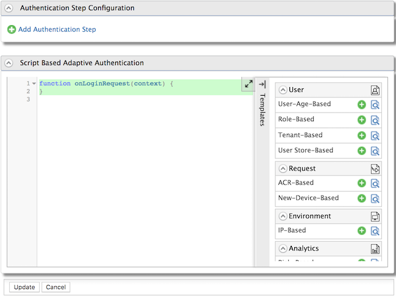

Configuring a Service Provider for Adaptive Authentication¶
Adaptive authentication uses machine learning to enable an identity provider to prompt multi-factor authentication steps based on a user's risk profile or user behavior, i.e., the authentication adapts to the situation or the user during the authentication process. For instance, high-risk logins such as a user attempting to log in from an unusual location causes the adaptive authentication mechanism to prompt an extra authentication in order to increase security.
For more information on adaptive authentication with WSO2 IS, see Adaptive Authentication .
This tutorial guides you through setting up a sample application to try out adaptive authentication and configuring it as a service provider in WSO2 IS.
Tip
Before you begin ,
-
Install WSO2 IS version 5.7.0. by downloading the installer .
-
Open the
/etc/hostsfile, add the following entry, and restart your computer.127.0.0.1 localhost.com
Note: To avoid any IP address conflicts, ensure that this is the only entry for this IP address in the
/etc/hostsfile.
Step 01: Set Up the Samples¶
Follow the steps below to set up the sample application to try out adaptive authentication using a sample application.
-
PickUp sample web application (SAML).
-
Download the saml2-web-app-pickup-dispatch.com.war file and paste it inside the
<TOMCAT_HOME>/webappsdirectory. -
Start the tomcat server and access the PickUp application URL at http://localhost.com:8080/saml2-web-app-pickup-dispatch.com.
Note that a login screen appears.

-
-
Deploy the sample authenticator dependency and web application in WSO2 IS.
-
Download the
org.wso2.carbon.identity.sample.extension.authenticators-5.7.0.jarfile and paste inside the<IS_HOME>/repository/components/dropinsdirectory. -
Download the
sample-auth.warfile and paste it inside the<IS_HOME>/repository/deployment/server/webappsfolder.
This.warfile contains the WEB UI for the sample authenticators used in this tutorial. -
Start the WSO2 IS server and test whether all the samples are configured successfully.
-
Sign in to the WSO2 IS Management Console with one of the following URLs using
adminas the username and password .java For HTTP --> http://<HTTP_HOST>:9776/carbon For HTTPS --> https://<HTTPS_HOST>:9443/carbon -
On the Main tab, click Service Providers > Add .

- Enter
testas the Service Provider Name and click Register. **
**
-
Expand the Local and Outbound Configuration section.
The following authenticators should be available in the local authenticators list.- Demo Fingerprint Authenticator
- Demo Hardware-Key Authenticator
- Demo Face ID Authenticator

Remain in the Management Console.
Note
These Demo Authenticators are provided as a way of learning and experimenting the adaptive authentication templates in realtime. These authenticators perform no real function and should not be used for any production or QA purposes.
-
-
Step 02: Configure the Service Provider¶
In this step, let's configure a service provider for the sample application by setting up inbound authentication.
This tutorial guides you through setting up a service provider for a SAML application. To configure a service provider with other protocols such as OAuth and WS-Federation, see Configuring Inbound Authentication for a Service Provider .
-
On the Main tab, click Service Providers > Add and add a new service provider called
saml2-web-app-dispatch.com.For more information about configuring a service provider, see Adding and Configuring a Service Provider .
-
Expand the Inbound Authentication configuration> SAML2 Web SSO configuration section, and click Configure .
 - Fill in the following fields.
- Issuer:
saml2-web-app-pickup-dispatch.com - Assertion Consumer URL:
http://localhost.com:8080/saml2-web-app-pickup-dispatch.com/consumer
- Issuer:
- Leave the rest of the default configurations as it is and click
Register .
 - Expand Local and Outbound Authentication Configuration and click
Advanced Configuration .
 - You can add authentication steps or use a template to configure
adaptive authentication depending on your requirement. For example,
add Demo HardwareKey Authenticator.

What's Next?¶
Now that you have set up the service provider, the sample application, and the demo authenticators, you can try out the following scenarios that use pre-defined templates for different adaptive authentication use cases.